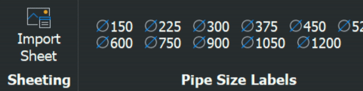

Works-As-Executed
WAE plans record what was actually built against what was designed. The WAE ribbon covers bringing the design sheets in, marking them up, and the standard annotations.

The workflow
- Import the sheets — each raster becomes its own layout, scaled to paper and ready to plot.
- Mark up in red over the design using the preset labels and WAE text.
- Calculate grades where levels need checking.
- Add the certification note to the front sheet.
Annotation environment
The annotation commands place their text on the ANNOTATIONS layer in the WAE LABEL style. That style has a fixed 2.5 height — WAE sheets are worked at paper scale, so the text isn't annotative and doesn't rescale.